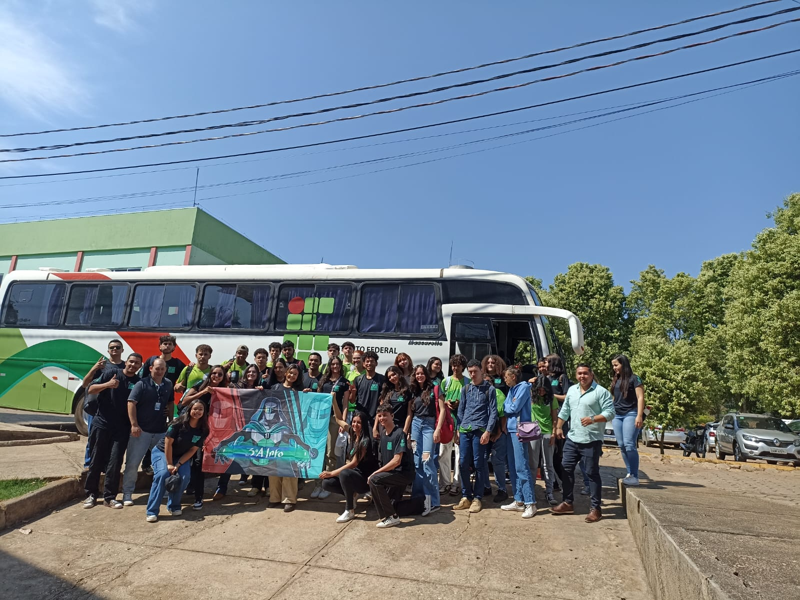
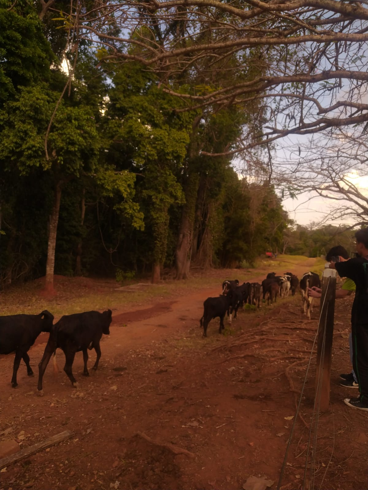
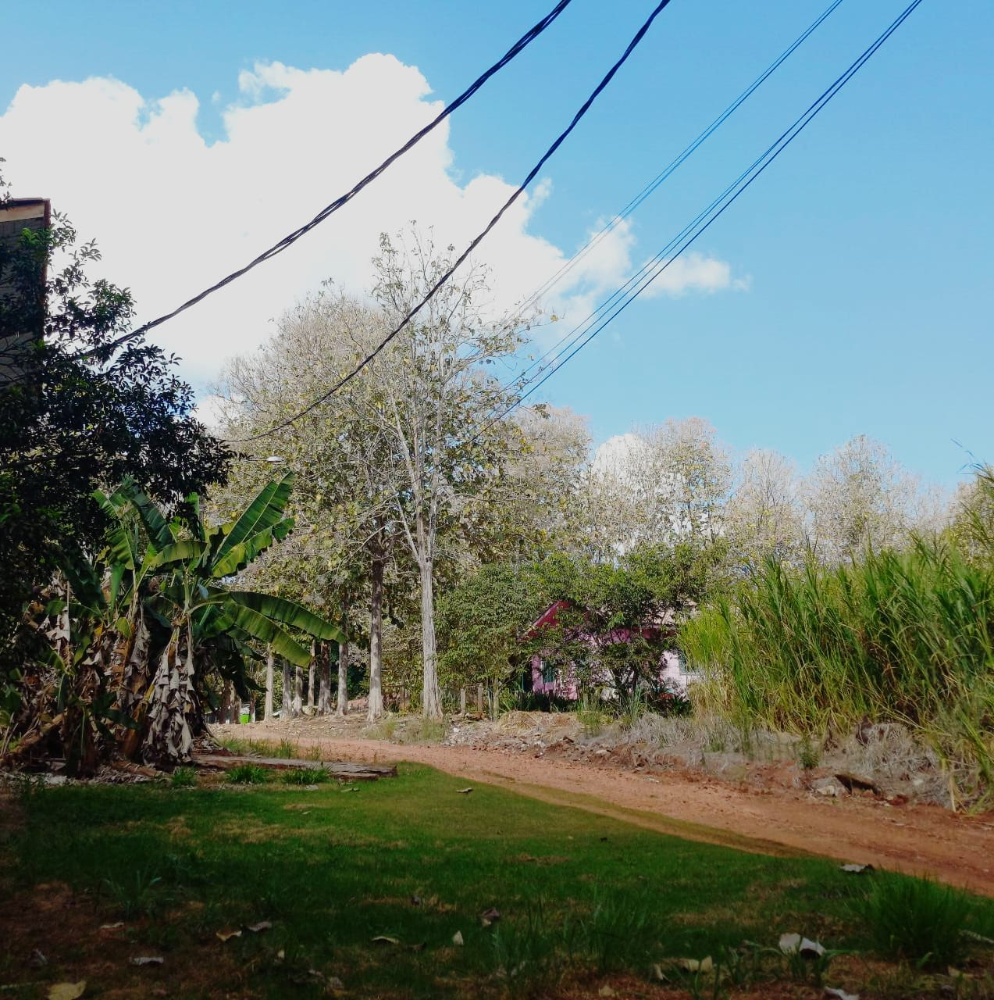
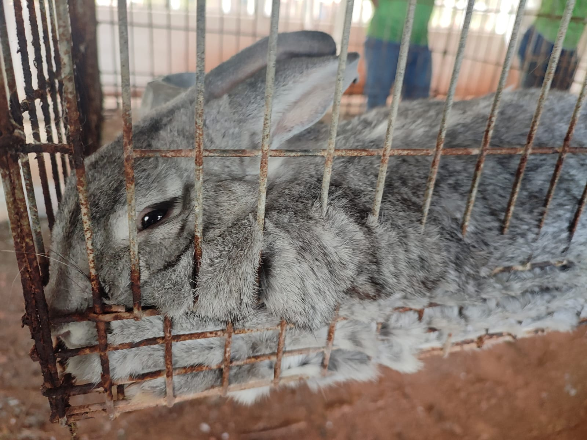
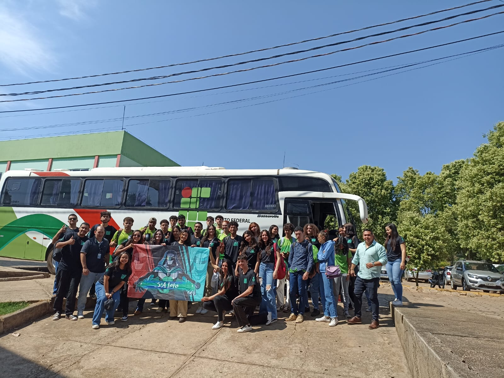
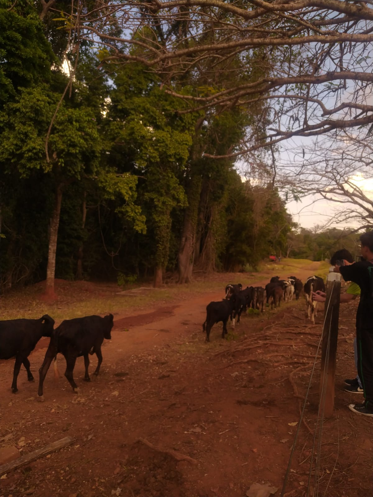
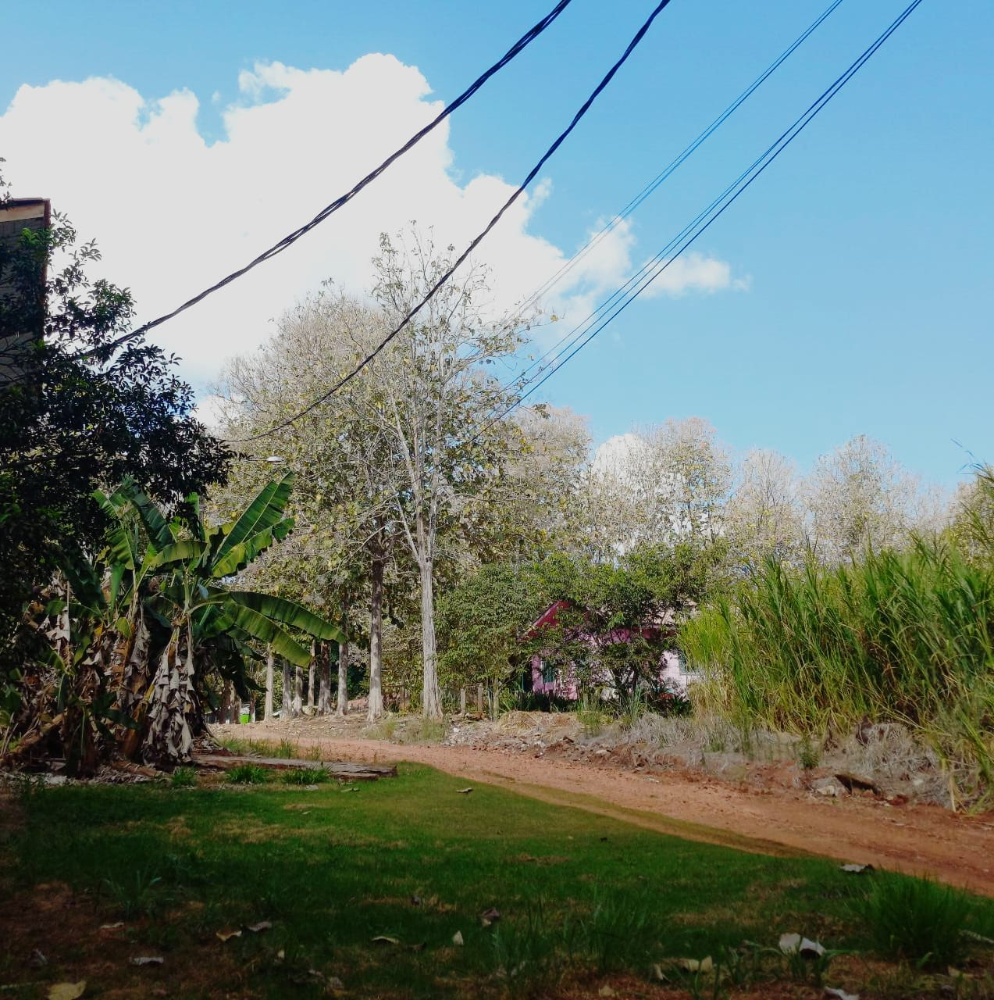
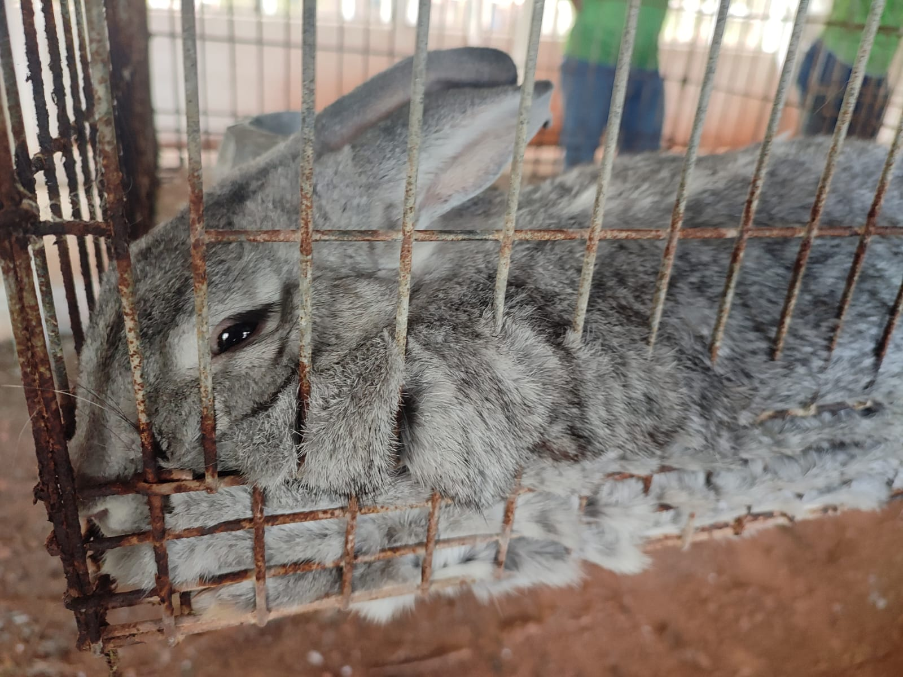

Relatório da visita técnica - IFRO Campus COLORADO
Aqui ficara o Relatório:
Partimos do IFRO de Vilhena as 9 da manhã e chegamos em Colorado as 11. Ao chegarmos fomos encaminhados a uma sala aonde onde foi explicado o cronograma do dia,
depois disso fomos almoçar.
Depois do almoço tivemos uma série de palestras sobre o projeto feito no IFRO de Colorado destinado aos alunos e a comundidade,
mostraram como começaram o projeto do zero e como ele evoluíu até entâo,
com projetos de judô e de fotografia, além de outros destinados as áreas técnicas da agropecuária.
Depois disso fomos fazer um tuor com o objetivo de tirar fotos e conhecer o Campus, passamos pelos setores
produtivos 1, 2 e 3, vendo plantações de cultivo básico como hortaliças, café ou árvoes frutiferas destinados
ao suprimento local, logo em seguida também conhecemos os animais criados para surpimento local
ou para comércio dependendo da época, de galinhas, coelhos, codornas, abelhas
a até vacas, porcos e búfalos. Depois disso enfim fomos embora.
Aqui ficará a Galeria de fotos:
 






